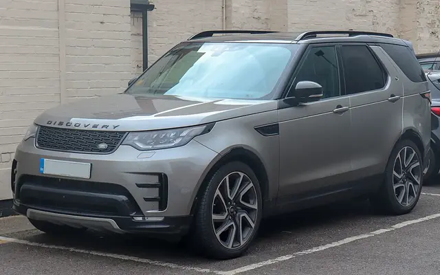

Par Motor › Precios por modelo › Land Rover Discovery
Precio de segunda mano · noviembre de 2026¿Cuánto vale un Land Rover Discovery de segunda mano?

Precio justo estimado de un Land Rover Discovery usado en España, año por año, con los kilómetros normales para su edad y en buen estado: de 14.900 € a 70.900 €. Para tasar el tuyo con sus kilómetros reales y su estado, usa el tasador gratis.
Precios del Land Rover Discovery por año
Discovery 4 (2009–2016)
Precio de nuevo: TDV6 3.0 211 CV, 55.000 € · SDV6 3.0 256 CV, 62.000 €
| Año | Km normales | TDV6 3.0 211 CV · Diésel | SDV6 3.0 256 CV · Diésel |
|---|---|---|---|
| 2016 | 100.000 km | 25.900 € | 29.200 € |
| 2015 | 100.000 km | 23.900 € | 27.000 € |
| 2014 | 100.000 km | 22.100 € | 24.900 € |
| 2013 | 100.000 km | 20.400 € | 23.000 € |
| 2012 | 100.000 km | 18.900 € | 21.300 € |
| 2011 | 100.000 km | 17.400 € | 19.600 € |
| 2010 | 100.000 km | 16.100 € | 18.200 € |
| 2009 | 100.000 km | 14.900 € | 16.800 € |
Discovery 5 (2017–hoy)
Precio de nuevo: Sd4 2.0 240 CV, 62.000 € · Td6 3.0 258 CV, 68.000 € · D250 3.0 (microhíbrido) 249 CV, 72.000 €
| Año | Km normales | Sd4 2.0 240 CV · Diésel | Td6 3.0 258 CV · Diésel | D250 3.0 (microhíbrido) 249 CV · Diésel |
|---|---|---|---|---|
| 2026 | 10.000 km | 61.000 € | 66.900 € | 70.900 € |
| 2025 | 30.000 km | 51.300 € | 56.200 € | 59.500 € |
| 2024 | 50.000 km | 47.400 € | 52.000 € | 55.000 € |
| 2023 | 70.000 km | 43.800 € | 48.000 € | 50.800 € |
| 2022 | 90.000 km | 37.200 € | 40.800 € | 43.200 € |
| 2021 | 100.000 km | 34.000 € | 37.300 € | 39.500 € |
| 2020 | 100.000 km | 33.500 € | 36.700 € | 38.900 € |
| 2019 | 100.000 km | 32.900 € | 36.100 € | 38.200 € |
| 2018 | 100.000 km | 32.200 € | 35.300 € | 37.300 € |
| 2017 | 100.000 km | 31.400 € | 34.400 € | 36.400 € |
La cadena de distribución se estira y puede romperse, con avería grave del motor. Pide el historial de mantenimiento y pregunta si se ha cambiado la cadena.
Kilómetros normales: 15.000 al año en gasolina, híbridos y eléctricos, y 20.000 en diésel, con un máximo de 100.000 km (por encima no tasamos: el precio depende demasiado del historial de cada coche). Cifras redondeadas a 100 €.
Preguntas frecuentes
¿Cuánto vale un Land Rover Discovery de segunda mano?
Según el año, la versión y los kilómetros, un Land Rover Discovery usado vale hoy de 14.900 € a 70.900 € en España. El más barato de nuestra tabla es un TDV6 3.0 de 2009 (14.900 €) y el más caro un D250 3.0 (microhíbrido) de 2026 (70.900 €). Son precios justos estimados entre particulares y profesionales, con los kilómetros normales para su edad y en buen estado.
¿Cuánto valor pierde un Land Rover Discovery al año?
Con unos años encima, un Land Rover Discovery pierde alrededor de un 10 % de su valor cada año (calculado sobre el Sd4 2.0 de la generación Discovery 5). Los primeros años la caída es mayor y a partir de los 70.000 km se acelera.
¿Qué motorizaciones tiene el Land Rover Discovery?
En nuestra base de datos hay versiones diésel, en 2 generaciónes: Discovery 4 y Discovery 5.
¿Qué motores del Land Rover Discovery dan problemas?
Ojo con el Land Rover y Jaguar 2.0 diésel Ingenium (cadena) (Sd4 2.0, 2017–2019): son motores con fallos graves y muy extendidos. Antes de comprar uno, pide el historial de mantenimiento y comprueba si ya se hizo la reparación. El resto de motores no tiene problemas fuera de lo normal.
¿Cómo sé si me piden demasiado por un Land Rover Discovery?
Abre el tasador de Par Motor, elige el Land Rover Discovery, el año y los kilómetros reales, y escribe lo que te piden. Te diremos si está por debajo del precio justo (chollo) o por encima (caro). Es gratis y no pide registro ni matrícula.
Otros Land Rover
Compara su coste real
El precio de compra es solo una parte. Mira cuánto te costaría al mes con combustible, seguro, neumáticos, mantenimiento y lo que pierde de valor.
Abrir el comparador →